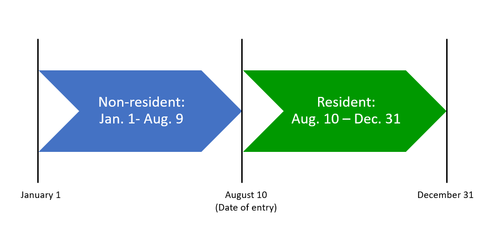

Review what goes on a tax return to get ready to help others prepare their taxes.
On this page
- Residency status for tax purposes
- Date of entry
- Identification numbers
- Submitting the tax return
- Information about a newcomer’s spouse
- Reporting foreign income over $100,000 (Canadian)
- Income earned inside and outside Canada
- Non-refundable tax credits
- Net income while living with their spouse or common-law partner in Canada
- International students
- Benefits and other credits
Residency status for tax purposes
There are different types of residency statuses for tax purposes. As a volunteer, you mainly work with individuals who are residents or newcomers.
Residents are individuals who live in and have significant residential ties with Canada. An individual is generally considered a resident, for tax purposes, from the time they enter Canada. All residents of Canada, including refugees, may submit a tax return even if they have only been in the country for a few months.
Newcomers are individuals who left another country to come and live in Canada. Newcomer status applies only for the first tax year in which they became a resident, even if they have only been in Canada for a few months.
Once the individual has been a resident for tax purposes for a whole year, they will then submit a regular tax return. For example, someone who arrived in Canada in 2021 is considered a newcomer for the 2021 taxation year only. They would submit a regular tax return for the 2022 taxation year.
An individual’s residency status for tax purposes is important, as it determines whether or not they are required to submit a tax return in Canada. A person’s residency status for tax purposes is different from their immigration status.
Important note
As a CVITP volunteer, you are not responsible for determining a person’s residency status or to advise them of their tax obligations.
If an individual is unsure of their residency status, refer them to Determining your residency status , the individuals’ tax enquiries line or you may contact the CVITP dedicated line on their behalf.
Date of entry
The date of entry is the date when the individual became a resident of Canada for tax purposes and this generally corresponds to the date the individual arrived in Canada. It is important to enter the exact date, as this could affect the amount of non-refundable tax credits they may be eligible for.
In the following graphic, the date of entry is August 10, 2022. Based on the date of entry, a newcomer’s first year in Canada can be split into two periods:
- when they were a non-resident of Canada (January 1 to August 9, 2022)
- when they were a resident of Canada (August 10 to December 31, 2022)

Text version of the graphic
Arrow indicating Non-resident: Jan 1 – Aug 9, followed by arrow indicating Resident: Aug 10 – Dec 31
For most newcomers, the income they earned before they move to Canada is non-taxable. It does not need to be included in the Total income section of the tax return. However, it is important to provide this information since this income is required to calculate certain benefits and credits.
Identification numbers
One of the most important steps when you use UFile CVITP to prepare a tax return is the identification section of the interview.
Newcomers may have an individual tax number (ITN) or a temporary tax number (TTN) instead of a social insurance number (SIN). The ITN or TTN allows newcomers without a SIN to submit their tax return and apply for benefits.
The ITN is only issued to non-residents and international students who are not eligible to obtain a SIN. Residents of Canada who are not eligible to receive a SIN or an ITN and are required to submit a tax return may be assigned a TTN. A TTN is a nine-digit number beginning with a zero (01 or 03). This is an internal number that the CRA provides to the individual.
As a volunteer, you are not expected to provide assistance in filling out applications for an identification number.
If the individual wants more information about obtaining a SIN, refer them to Canada.ca Social Insurance Number - Overview.
Submitting the tax return
What to consider when submitting a tax return in relation to the different types of taxpayer-identification numbers:
| Type of identification number | Information to consider for newcomers |
|---|---|
| Social Insurance Number (SIN) | If the individual has a SIN or a temporary SIN you may enter either into the SIN field in the tax software. If the individual is waiting to receive their SIN, you may:
The tax return is held until Service Canada issues the individual's SIN. |
| Individual Tax Number (ITN) |
|
| Temporary Tax Number (TTN) |
|
For more information on how to print a tax return, refer to How to review and send the return.
Refer to Where to mail your paper T1 return for situations where EFILE is not possible.
Information about a newcomer’s spouse
If the newcomer’s spouse or common-law partner lives in Canada with them, proceed as usual.
If a newcomer’s spouse or common-law partner is living abroad and they are separated for reasons other than a breakdown in their relationship, you must still enter a marital status of either married or common-law on their tax return.
Since a non-resident spouse does not need to submit a tax return in Canada it is important to report the spouse’s name and their net income in Canadian dollars using the annual exchange rates. The CRA needs this information to calculate the benefits and credits for the individual living in Canada.
If newcomers provide financial support to their non-resident spouse, they may be eligible to claim a spousal amount on their tax return. The individual must keep any supporting documentation or receipts so that, if contacted by the CRA at a later date, they can prove the non-resident spouse depended on them for support.
Reporting foreign property over $100,000 (Canadian)
An individual does not have to report foreign property for the year they first become a resident of Canada.
Foreign property does not include any personal use property, such as a primary residence, vacation home, or cottage.
The individual is not eligible for the CVITP if they own foreign property and were a resident of Canada in any previous year, and you should not prepare the return tax because it would be considered a complex tax situation.
Foreign property owned includes:
- bank accounts held abroad (interest)
- shares held in foreign corporations or shares held in a resident corporation but held outside of Canada
- vacant land abroad
- other income-earning foreign property
Remember to always convert all foreign income into Canadian dollars. The Bank of Canada has annual exchange rates available for most countries.
Income earned inside and outside Canada
Newcomers must report any world income they earned while they were a resident of Canada.
In some instances, an individual may also have earned Canadian-sourced income while they were a non-resident. They may be asked to report that income if they wish to apply for the GST/HST tax credit, the Canada child benefit (CCB) or other credits and benefits for which they may qualify.
Non-refundable tax credits
A newcomer may claim non-refundable tax credits that are proportional to the number of days in the year they were considered to be a resident of Canada. The amounts that they can claim are calculated based on their Date of entry.
However, if the newcomer’s taxable income in Canada represents 90% or more of their world income then the 90% rule allows them to claim all of the non-refundable credits. Providing the following information allows the software to determine if the 90% rule applies when calculating the non-refundable tax credits:
- Canadian sourced income (excluding Part XIII) they earned when they were not a resident of Canada,such as income from an employer located in Canada, income from a business carried on in Canada, or taxable part of scholarships/fellowships/bursaries from Canada
- Canadian source Part XIII income PLUS foreign sourced income they earned when they were not a resident of Canada, such as interest and dividends, rental income, pension income including Old Age Security, Canada Pension Plan, and Quebec Pension Plan, and employment income in another country
Net income while living with their spouse or common-law partner in Canada
When an individual is already a resident of Canada for tax purposes and their spouse or common-law partner becomes a newcomer, the individual must:
- provide all their information slips and income for the full year
- confirm their net income for the period when they lived with their spouse or common-law partner in Canada.
For example, the individual is a resident of Canada for tax purposes in 2022. Their spouse arrives in Canada as a newcomer on July 1, 2022, so the individual provides his own net income for the period between July 1 2022 and December 31 2022. This income is entered into the Immigrant, emigrant or non-resident section of the tax software.
Ufile tip
Generally, an individual and their spouse or common-law partner arrive in Canada on the same date. If this is the case, the tax software automatically claims any credits the couple may be eligible for.
International students
Residency status for international students is more complex because they may not establish significant residential ties with Canada if they return to their home country on a periodic basis or for a significant amount of time over the calendar year; or move to another country when not attending university in Canada. It is up to the student to determine their residency status for tax purposes.
An international student is considered a newcomer only when they become a new resident of Canada for tax purposes for the very first time.
Newcomer status is not applied if the international student has:
- been a resident of Canada for tax purposes for a full year
- previously established themselves as a resident of Canada for tax purposes in a previous year and then after any length of absence from Canada returned for another semester and re-established residential ties
Benefits and other credits
Newcomers may be eligible for benefits and credits such as the Goods and services tax/harmonized sales tax (GST/HST) credit and the Canada child benefit (CCB). Refer the individuals to Are you eligible for benefits and credits?
For screen-by-screen instructions, refer to specific situations.